Bank Guarantees
A standalone Lighthouse platform for issuing bank guarantees — and the Banka design system with micro-animations that the banking interfaces are built on. One case about turning a heavy financial process into a clear product.
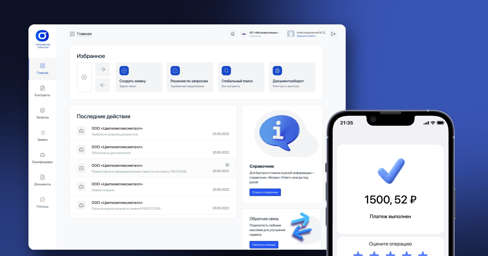
A guarantee is slow and labour-intensive
Issuing a bank guarantee for both the Beneficiary and the Principal is a long, labour-intensive process. Banks struggle with limit allocation: they have to manage financial obligations and assess risks — the applicant’s creditworthiness, the size and term of the guarantee, and how the contract will be performed.
The bank wants to support the client without putting the business at risk. Together with the Lighthouse team, I designed the layouts for a separate platform that helps issue bank guarantees.
Balance client support against risk
- Allocating limits across clients and contracts
- Assessing the applicant’s creditworthiness
- The guarantee’s size and term
- Monitoring contract performance
- Documents moving between three parties
Guarantee platform
The Lighthouse web cabinet: requests, contracts, queries, beneficiaries, documents and the deal status at every step.
Banka design system
Tokens and components for iOS, Android and web, light and dark themes, example screens and corner cases.
Micro-animations & mascot
One table of timings and easing curves for every component, transition prototypes and a character for status screens.
Three parties, one guarantee
The interface has to work for every party: show whose move it is right now and never lose documents in between.
The contractor
Requests the guarantee, sets the limit, uploads documents and follows the bank’s decision.
The customer
Receives the performance guarantee and sees the contract it was issued for.
The guarantor
Assesses risks, structures the deal, makes the decision and prepares the documentation.
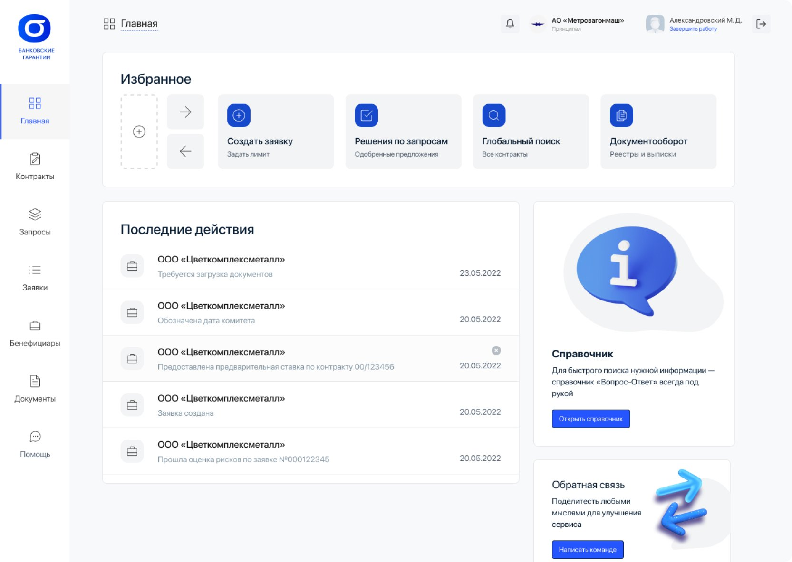
A home screen where every deal starts
On the left are the platform sections: contracts, queries, requests, beneficiaries and documents. In the centre are favourite actions the user arranges for themselves: create a request and set a limit, decisions on requests, a global search across contracts, and document flow.
The “Recent actions” feed shows what happened to each request: documents needed, committee date set, a preliminary rate offered, the risk assessment passed. The Q&A reference and a feedback form are always one click away.
The request card and six deal stages
At the top: who the principal and the beneficiary are, the requested amount, the issue date and the guarantee period. On the right: a stage tracker, so the user always sees where the deal is and what comes next. In the centre: the form for the current step — for example, entering the contract details for the guarantee.
- ✓Bank status
- ✓Working with documents
- ✓Deal structuring
- ✓Decision
- 5Documentation
- 6Final decision
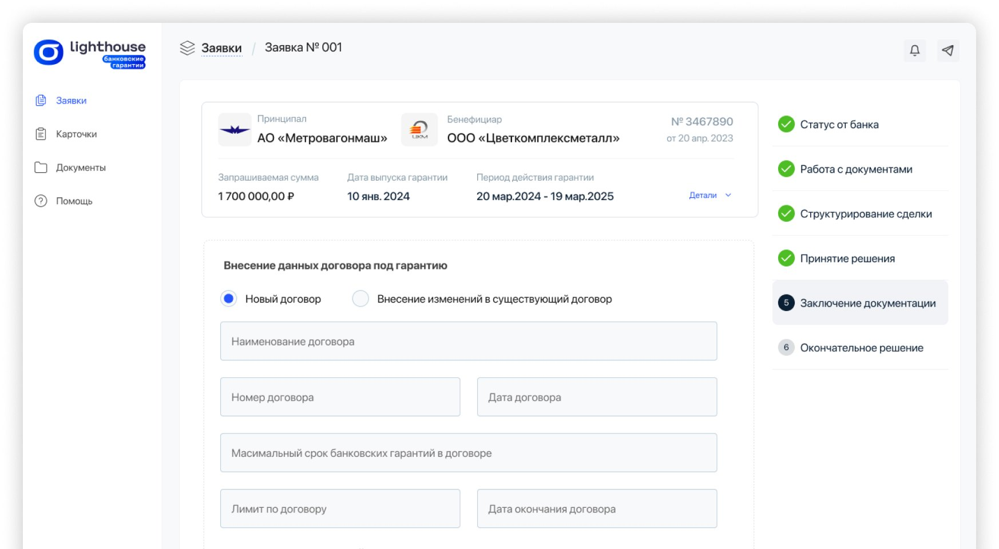
Banka Design System
Gazprombank was separating from the main Gazprom branch and developing its own design system. We built a sophisticated token- and component-based system, implemented example screens and corner cases, and designed micro-animations and a mascot.
Components are designed as one library for iOS, Android and web. Presets are components with pre-configured states. Each component has a guide on where and how to use it.
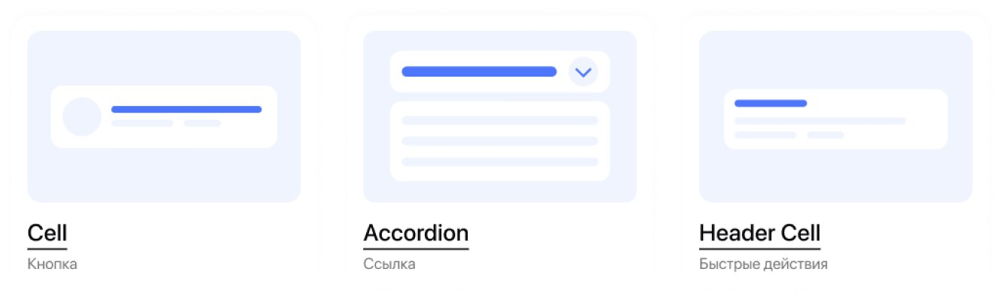
colour tokens in light and dark themes
text styles for iOS, Android and desktop
component groups across 9 sections
platforms from one library
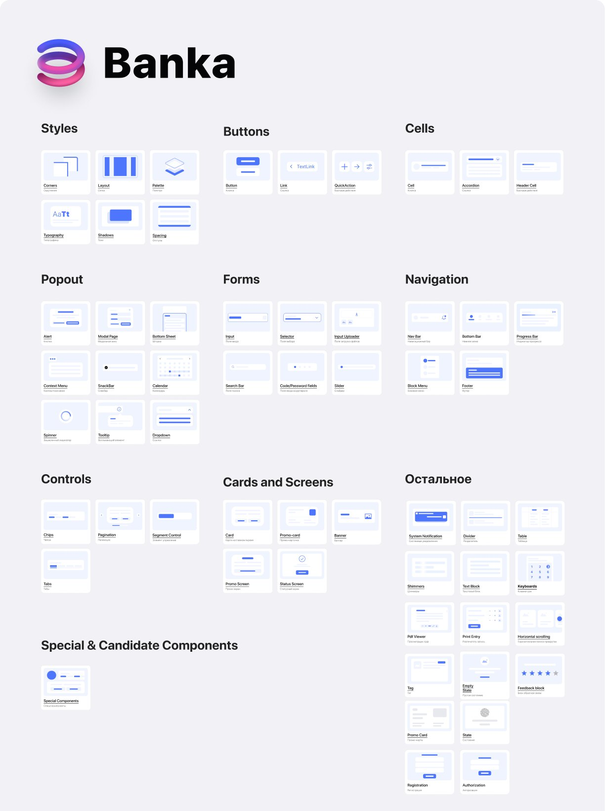
Tokens: colour, radii, spacing, type
Colours are semantic — text, elements, background, special — and every token has a light and a dark value. The Themer plugin switches themes and type styles across a whole layout.
Corner radii
Spacing
Typography
How a component gets into the system
We documented a component’s path for product teams, from idea to design supervision. UI Kit updates are published every second Thursday of the sprint, and news is shared at the joint demo once a sprint.
Idea
The UI Kit has no component for the task, or it doesn’t solve it.
Agreement
Discussed with developers, designers and analysts; a type is assigned.
Design & checklist
Styles, states, 320–640 adaptivity, documentation and an in-context example.
UI Kit release
iOS/Android status, description and grooming with developers.
Development
Implementation takes 1–2 sprints in the team’s sandbox.
Supervision & QA
The designer signs off the component in the sandbox; bugs go to Jira.
A platform component the system clearly needs.
A product candidate with reuse potential — tested first.
Useful for one specific case, maintained by the product team.
The component is rejected.
- A unique, clear component name
- Type, colour and radius styles are bound
- Layers named in English, same order in every variant
- Icons from the library, touch areas accounted for
- Auto Layout: adapts from 320 to 640 px
- All states, long text and missing data checked
- Animation specified where needed
- Accessibility: contrast, VoiceOver and TalkBack, dynamic type
Screens built from the system
For each component we showed how it lives on a real screen. For example, the block layout on the home screen: what changes with and without system notices, and the spacing between sections.
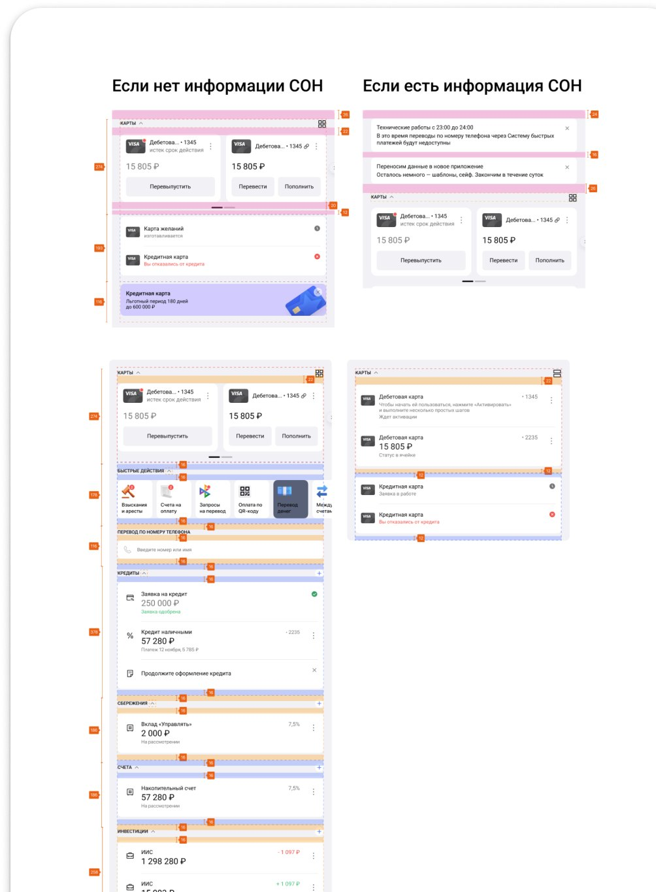
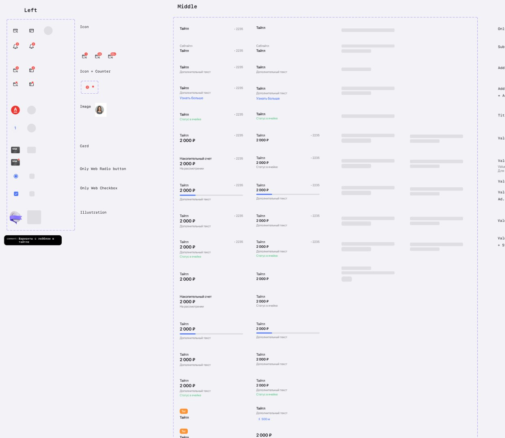
Mascot & 3D illustrations
A fluffy blue character and soft 3D objects appear on status screens and tips — wherever the bank needs a warmer voice.
One motion table for every component
I put together the animation file for the design system: for every component — the trigger, which properties animate, the duration and the curve. Designers took values from the table and developers from the prototypes, so the interface moves the same way on iOS, Android and web.
| Component | What happens | Duration | Easing |
|---|---|---|---|
| Accordion | Cell expands and collapses | 300 ms / 200 ms | ease-out |
| Tabs & Chips | X shift and colour change on switch | 190 ms | 0.42, 0, 0.58, 1 |
| Tooltip | Appears with a 2 px shift down, disappears upward | 300 ms / 250 ms | ease-out |
| Additional Alert | Background dims and the alert slides to centre; on tap it fades out | 250–300 ms / 50–100 ms | 0, 0, 0.57, 1 |
| Shimmer | Looping highlight, repeats after 500 ms | 800 ms | 0.45, 0.02, 0.49, 0.99 |
| Shimmer → content | Shimmer is replaced by content in two steps | 100 ms + 50 ms | ease-in |
| Input | Field state change | 200 ms | ease-out / ease-in |
| Status Screen | A banner appears if it loads late | 150 ms | ease-in |
| Feedback Block | The “Rate the operation” block on the status screen | 300 ms | ease-out |
| Pull-to-refresh | Arrow up to 88 px, then a loader and a check mark or an error | gesture-driven | — |
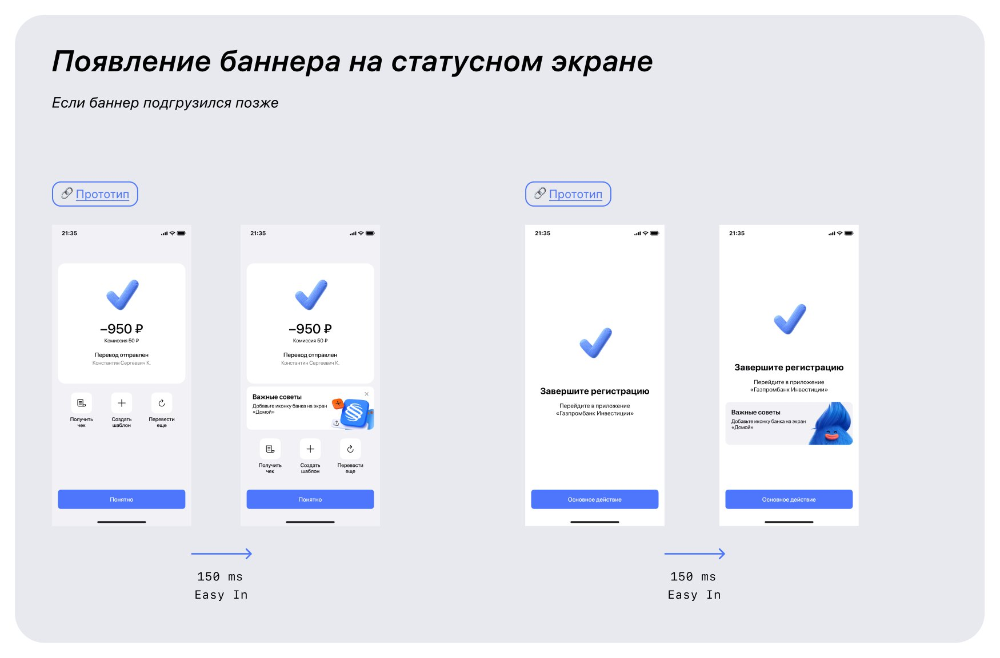
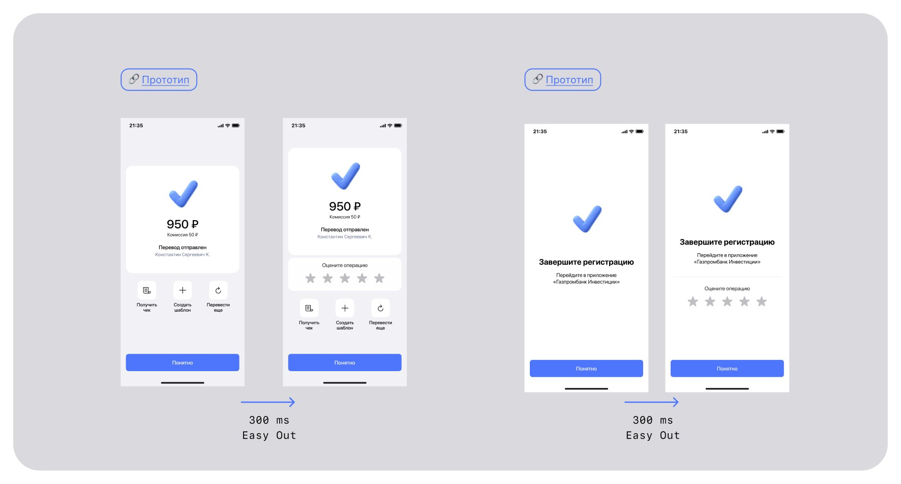
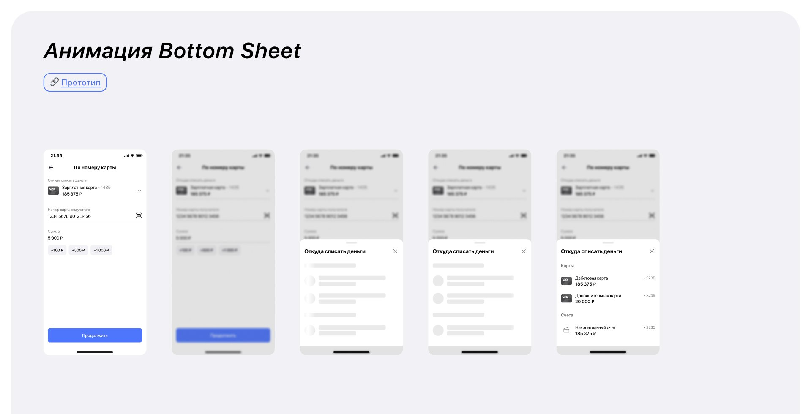
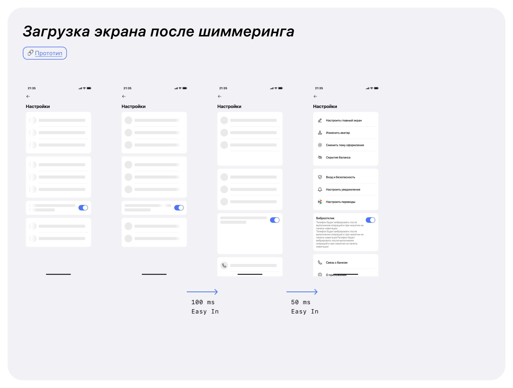
The guarantee is arranged on one platform: no branch visit, with the deal status visible at every step.
Limits, risks, documents and decisions sit in one process instead of email threads and manual work.
One design system and one motion table for iOS, Android and web, and a clear path for every new component.
Want to learn more about this project or discuss a collaboration?
Get in touchLet's stay in touch!
I'm always open to new projects, long-term collaborations, and exciting ideas. Feel free to reach out through any channel.